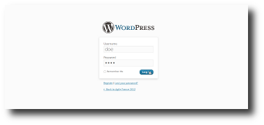
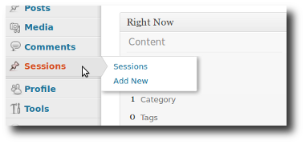
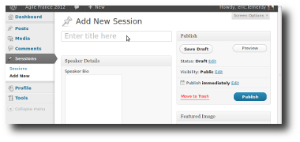
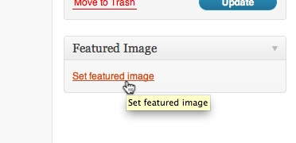
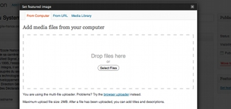
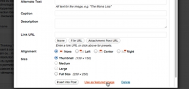

La date limite de proposition des sessions est le 1er avril 2012.
Vous pouvez proposer une session en suivant ces étapes :



Votre session sera publiée directement sur le site. Vous pourrez la ré-éditer quand vous voulez.
Elle aura une chance d’être séléctionnée par le Comité de Séléction qui se réunira comme tous les ans pour établir le programme de la conférence.
Si vous êtes en relance de paiement pour les années précédentes, votre proposition sera refusée.
Comment publier votre photo ?


